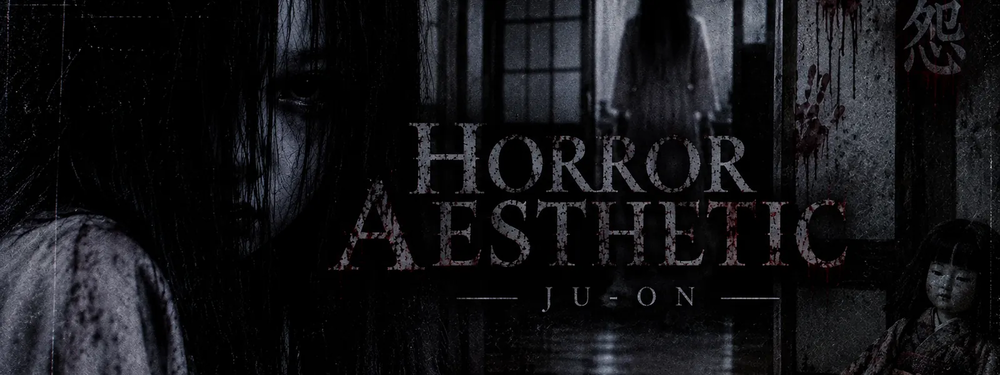
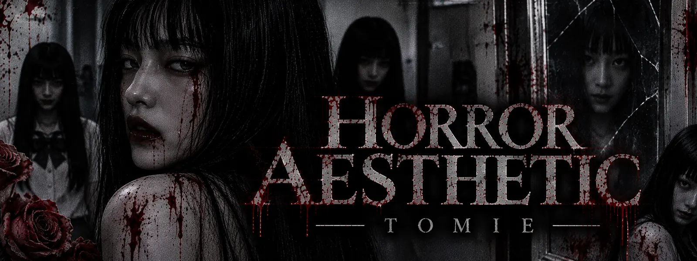

Independent horror journal · Digital archive
Enter the
dark.
Территория, где ужас становится искусством. От призрачного японского кинематографа до готической литературы, от культового андеграунда до телесного кошмара.
Some doors
should remain
unopened.
should remain
unopened.
THE ARCHIVE IS OPEN ✦ CINEMA · LITERATURE · FOLKLORE ✦ BEAUTY IN THE MACABRE ✦ THE ARCHIVE IS OPEN
Explore the collection
Территории ужаса
Семь входов в темноту

01 / Japanese horrorJ-Horror
J-Horror
Chronicles
Призраки, проклятия, тишина и тревога повседневности

02 / CinemaFilm
Film
Archives
Рецензии и культовые фильмы

03 / LiteratureLibrary of
Library of
Horror
Книги, манга и авторы тьмы

04 / Myth & folkloreFolklore
Folklore
& Hauntings
Легенды, сущности и обряды

05 / The collectionThe Dark
The Dark
Archive
Подборки, темы и находки
Editor's selection
Из тёмного архива

J-Horror / Essential viewing
Дом, который помнит
Японский хоррор превращает знакомое пространство в источник бесконечной тревоги.

Body horror / Cinema
Красота распада
Когда тело перестаёт быть границей между человеком и кошмаром.

Literature / Manga
Лики, которые не исчезают
Графический ужас, навязчивые образы и невозможность забыть увиденное.